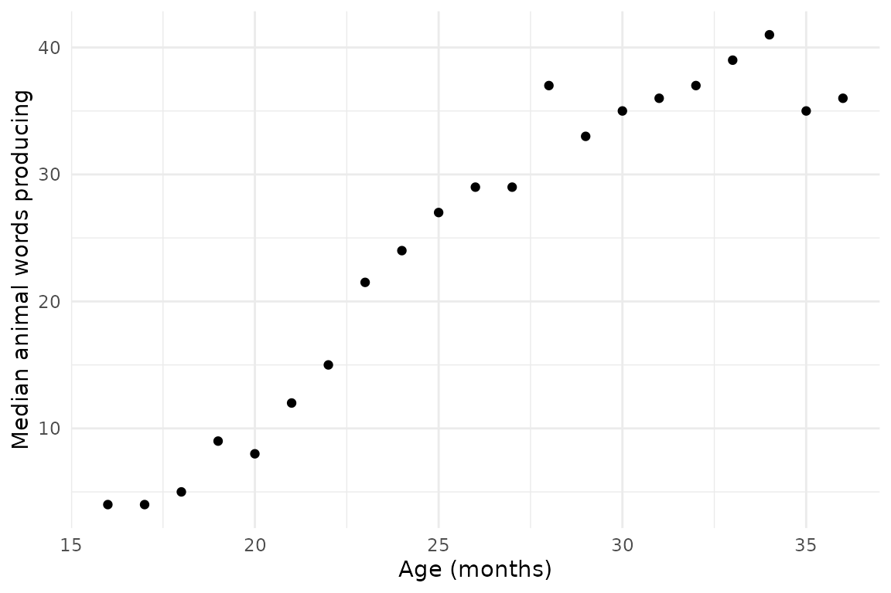

Accessing the Wordbank database
Mika Braginsky
2026-09-20
Source:vignettes/wordbankr.Rmd
wordbankr.RmdThe wordbankr package allows you to access data in the
Wordbank database from
R. This vignette shows some examples of how to use the data
loading functions and what the resulting data look like.
The data are hosted as a versioned dataset on Redivis.
The dataset is public, but downloading from Redivis requires a (free)
account: the first time you call a wordbankr function in an
interactive session, a browser window opens asking you to authorize
access, and your credentials are cached after that. For scripts and
servers, set the REDIVIS_API_TOKEN environment variable
instead. If Wordbank cannot be reached, functions print a message and
return NULL rather than raising an error. See Data versions and
reproducibility below for how to pin an analysis to a specific
release of the data.
There are three different data views that you can pull out of Wordbank: by-administration, by-item, and administration-by-item. Additionally, you can get metadata about the datasets and instruments underlying the data. Advanced functionality let’s you get estimates of words’ age of acquisition and word mappings across languages.
Administrations
The get_administration_data() function gives
by-administration information, either for a specific language and/or
form or for all instruments.
get_administration_data(language = "English (American)", form = "WS")## # A tibble: 10,173 × 13
## data_id date_of_test age comprehension production is_norming dataset_name
## <int> <date> <int> <int> <int> <lgl> <chr>
## 1 396657 2010-08-19 16 NA 87 FALSE Smith
## 2 397491 2013-02-02 26 NA 628 FALSE Byers
## 3 508934 2012-07-25 16 NA 143 FALSE Smith
## 4 508935 2012-08-06 16 NA 47 FALSE Smith
## 5 508938 2012-08-21 16 NA 10 FALSE Smith
## 6 509018 2012-07-31 16 NA 34 FALSE Smith
## 7 509045 2012-10-29 16 NA 75 FALSE Smith
## 8 509046 2012-10-29 16 NA 69 FALSE Smith
## 9 509062 2011-05-21 16 NA 7 FALSE Smith
## 10 509110 2012-08-03 16 NA 13 FALSE Smith
## # ℹ 10,163 more rows
## # ℹ 6 more variables: dataset_origin_name <chr>, language <chr>, form <chr>,
## # form_type <chr>, child_id <int>, dataset_version <chr>## # A tibble: 116,864 × 13
## data_id date_of_test age comprehension production is_norming dataset_name
## <int> <date> <int> <int> <int> <lgl> <chr>
## 1 351367 NA 12 77 77 FALSE Li
## 2 339541 2015-03-16 12 173 0 FALSE VonHolzen
## 3 392331 2012-10-09 9 144 0 FALSE Byers
## 4 351597 NA 17 NA 61 FALSE Li
## 5 396657 2010-08-19 16 NA 87 FALSE Smith
## 6 397491 2013-02-02 26 NA 628 FALSE Byers
## 7 387500 2016-02-17 23 NA 144 FALSE VonHolzen
## 8 462240 NA 7 81 0 FALSE Caselli
## 9 462150 NA 7 50 0 FALSE Caselli
## 10 462156 NA 7 23 0 FALSE Caselli
## # ℹ 116,854 more rows
## # ℹ 6 more variables: dataset_origin_name <chr>, language <chr>, form <chr>,
## # form_type <chr>, child_id <int>, dataset_version <chr>Items
The get_item_data() function gives by-item information,
either for a specific language and/or form or for all instruments.
get_item_data(language = "Italian", form = "WG")## # A tibble: 505 × 12
## item_id language form form_type item_kind category item_definition
## <chr> <chr> <chr> <chr> <chr> <chr> <chr>
## 1 item_1 Italian WG WG first_signs NA Risponde quando è chia…
## 2 item_2 Italian WG WG first_signs NA Risponde ad un No
## 3 item_3 Italian WG WG first_signs NA Reagisce ad un C'è la …
## 4 item_4 Italian WG WG phrases NA Vuoi la pappa
## 5 item_5 Italian WG WG phrases NA Hai sonno? Sei stanco
## 6 item_6 Italian WG WG phrases NA Vuoi bere?
## 7 item_7 Italian WG WG phrases NA Stai attento
## 8 item_9 Italian WG WG phrases NA Batti le manine
## 9 item_10 Italian WG WG phrases NA Cambiamo il pannolino
## 10 item_11 Italian WG WG phrases NA Vieni qui
## # ℹ 495 more rows
## # ℹ 5 more variables: english_gloss <chr>, uni_lemma <chr>,
## # lexical_category <chr>, complexity_category <chr>, dataset_version <chr>## # A tibble: 56,895 × 12
## item_id language form form_type item_kind category item_definition
## <chr> <chr> <chr> <chr> <chr> <chr> <chr>
## 1 item_1 British Sign Lang… WG WG phrases NA be careful
## 2 item_2 British Sign Lang… WG WG phrases NA bring me
## 3 item_3 British Sign Lang… WG WG phrases NA change nappy
## 4 item_4 British Sign Lang… WG WG phrases NA come here
## 5 item_5 British Sign Lang… WG WG phrases NA daddy/mummy ho…
## 6 item_6 British Sign Lang… WG WG phrases NA donttouch
## 7 item_7 British Sign Lang… WG WG phrases NA finish
## 8 item_8 British Sign Lang… WG WG phrases NA get up
## 9 item_9 British Sign Lang… WG WG phrases NA give me hug
## 10 item_10 British Sign Lang… WG WG phrases NA give me kiss
## # ℹ 56,885 more rows
## # ℹ 5 more variables: english_gloss <chr>, uni_lemma <chr>,
## # lexical_category <chr>, complexity_category <chr>, dataset_version <chr>Administrations x Items
If you are only looking at total vocabulary size, admins
is all you need, since it has both productive and receptive vocabulary
sizes calculated. If you are looking at specific items or subsets of
items, you need to load instrument data, using the
get_instrument_data() function. Pass it an instrument
language and form, along with a list of items you want to extract (by
item_id).
get_instrument_data(
language = "English (American)",
form = "WS",
items = c("item_26", "item_46")
)## # A tibble: 21,204 × 6
## data_id item_id value produces understands dataset_version
## <dbl> <chr> <chr> <lgl> <lgl> <chr>
## 1 396657 item_26 produces TRUE NA v3.0
## 2 396657 item_46 NA FALSE NA v3.0
## 3 397491 item_26 produces TRUE NA v3.0
## 4 397491 item_46 produces TRUE NA v3.0
## 5 431926 item_26 produces TRUE NA v3.0
## 6 431926 item_46 produces TRUE NA v3.0
## 7 431927 item_26 produces TRUE NA v3.0
## 8 431927 item_46 produces TRUE NA v3.0
## 9 431928 item_26 produces TRUE NA v3.0
## 10 431928 item_46 produces TRUE NA v3.0
## # ℹ 21,194 more rowsBy default get_instrument_table() returns a data frame
with columns of the administration’s data_id, the item’s
num_item_id (numerical item_id), and the
corresponding value. To include administration information, you can set
the administrations argument to TRUE, or pass
the result of get_administration_data() as
administrations (that way you can prevent the
administration data from being loaded multiple times). Similarly, you
can set the iteminfo argument to TRUE, or pass
it result of get_item_data().
Loading the data is fast if you need only a handful of items, but the
time scales about linearly with the number of items, and can get quite
slow if you need many or all of them. So, it’s a good idea to filter
down to only the items you need before calling
get_instrument_data().
As an example, let’s say we want to look at the production of animal words on English Words & Sentences over age. First we get the items we want:
items <- get_item_data(language = "English (American)", form = "WS")
animals <- if (!is.null(items)) items %>% filter(category == "animals")Then we get the instrument data for those items:
animal_data <- if (!is.null(animals)) {
get_instrument_data(language = "English (American)",
form = "WS",
items = animals$item_id,
administration_info = TRUE,
item_info = TRUE)
}Finally, we calculate how many animals words each child produces and the median number of animals of each age bin:
if (!is.null(animal_data)) {
animal_summary <- animal_data %>%
group_by(age, data_id) %>%
summarise(num_animals = sum(produces, na.rm = TRUE)) %>%
group_by(age) %>%
summarise(median_num_animals = median(num_animals, na.rm = TRUE))
ggplot(animal_summary, aes(x = age, y = median_num_animals)) +
geom_point() +
labs(x = "Age (months)", y = "Median animal words producing")
}
Metadata
Instruments
The get_instruments() function gives information on all
the CDI instruments in Wordbank.
## # A tibble: 108 × 9
## instrument_id language form form_type age_min age_max has_grammar
## <int> <chr> <chr> <chr> <int> <int> <lgl>
## 1 1 British Sign Langu… WG WG 8 36 TRUE
## 2 2 Cantonese WS WS 16 30 TRUE
## 3 3 Croatian WG WG 8 16 FALSE
## 4 4 Croatian WS WS 16 30 FALSE
## 5 5 Danish WG WG 8 20 FALSE
## 6 6 Danish WS WS 16 36 TRUE
## 7 7 English (American) WG WG 8 18 TRUE
## 8 8 English (American) WS WS 16 36 TRUE
## 9 9 French (Quebecois) WG WG 8 16 TRUE
## 10 10 French (Quebecois) WS WS 16 30 TRUE
## # ℹ 98 more rows
## # ℹ 2 more variables: unilemma_coverage <dbl>, dataset_version <chr>Datasets
The get_datasets() function gives information on all the
datasets in Wordbank, either for a specific language and/or form or for
all instruments. If the admin_data argument is set to
TRUE, the results will also include the number of
administrations in the database from that dataset.
get_datasets(form = "WG")## # A tibble: 57 × 11
## dataset_id dataset_name dataset_origin_name contributor citation license
## <int> <chr> <chr> <chr> <chr> <chr>
## 1 5 Marchman Marchman_Norming_Engli… Larry Fens… Fenson,… CC-BY
## 2 6 Byers Byers__English (Americ… Krista Bye… NA CC-BY
## 3 7 Thal Thal Donna Thal… Thal, D… CC-BY
## 4 9 Marchman Marchman_Norming_Spani… Donna Jack… Jackson… CC-BY
## 5 12 Kristoffersen Kristoffersen_longitud… Hanne Simo… Simonse… CC-BY
## 6 13 CLEX CLEX__Croatian_WG Melita Kov… Kovacev… CC-BY
## 7 17 CLEX CLEX__Russian_WG Stella Cey… Е.А.Вер… CC-BY
## 8 19 CLEX CLEX__Swedish_WG Mårten Eri… Eriksso… CC-BY
## 9 21 CLEX CLEX__Turkish_WG Aylin Künt… Acarlar… CC-BY
## 10 23 Shalev Shalev__Hebrew_WG Hila Gendl… Gendler… CC-BY
## # ℹ 47 more rows
## # ℹ 5 more variables: longitudinal <lgl>, language <chr>, form <chr>,
## # form_type <chr>, dataset_version <chr>
get_datasets(language = "Spanish (Mexican)", admin_data = TRUE)## # A tibble: 6 × 12
## dataset_id dataset_name dataset_origin_name contributor citation license
## <int> <chr> <chr> <chr> <chr> <chr>
## 1 8 Marchman Marchman Dallas Bilingual Donna Jack… Marchma… CC-BY
## 2 9 Marchman Marchman_Norming_Spanish… Donna Jack… Jackson… CC-BY
## 3 55 Fernald Fernald_Outreach_Spanish… Anne Ferna… Weisled… CC-BY
## 4 56 Fernald Fernald_Outreach_Spanish… Anne Ferna… Weisled… CC-BY
## 5 76 Marchman Marchman_Norming_Spanish… Donna Jack… Jackson… CC-BY
## 6 87 Hoff Hoff_English_Mexican_Bil… Erika Hoff… Hoff, E… CC-BY
## # ℹ 6 more variables: longitudinal <lgl>, language <chr>, form <chr>,
## # form_type <chr>, n_admins <int>, dataset_version <chr>Advanced functionality: Age of acquisition
The fit_aoa() function computes estimates of items’ age
of acquisition (AoA). It needs to be provided with a data frame returned
by get_instrument_data() – one row per administration x
item combination, and minimally the columns age and
num_item_id. It returns a data frame with one row per item
and an aoa column with the estimate, preserving and
item-level columns in the input data. The AoA is estimated by computing
the proportion of administrations for which the child
understands/produces (measure) each word, smoothing the
proportion using method, and taking the age at which the
smoothed value is greater than proportion.
if (!is.null(animal_data)) {
fit_aoa(animal_data)
fit_aoa(animal_data, method = "glmrob", proportion = 1/3)
}## # A tibble: 43 × 8
## aoa item_id item_kind item_definition category lexical_category uni_lemma
## <dbl> <chr> <chr> <chr> <chr> <chr> <chr>
## 1 24 item_13 word alligator animals nouns alligator
## 2 23 item_14 word animal animals nouns animal
## 3 24 item_15 word ant animals nouns ant
## 4 17 item_16 word bear animals nouns bear
## 5 19 item_17 word bee animals nouns bee
## 6 NA item_18 word bird animals nouns bird
## 7 21 item_19 word bug animals nouns bug
## 8 19 item_20 word bunny animals nouns bunny
## 9 22 item_21 word butterfly animals nouns butterfly
## 10 NA item_22 word cat animals nouns cat
## # ℹ 33 more rows
## # ℹ 1 more variable: complexity_category <chr>Advanced functionality: Cross-linguistic data
One of the item-level fields is uni_lemma (“universal
lemma”), which is intended to be an approximate semantic mapping between
words across the languages in Wordbank. The function
get_crossling_items() simply gives all the available
uni_lemma values.
## # A tibble: 2,187 × 2
## uni_lemma dataset_version
## <chr> <chr>
## 1 #N/A v3.0
## 2 0 v3.0
## 3 1PL v3.0
## 4 1PL.POSS v3.0
## 5 1PL.REFL v3.0
## 6 1SG v3.0
## 7 1SG.POSS v3.0
## 8 1SG.REFL v3.0
## 9 2PL v3.0
## 10 2PL.POSS v3.0
## # ℹ 2,177 more rowsThe function get_crossling_data() takes a vector of
uni_lemmas and returns a data frame of summary statistics
for each item mapped to that uni_lemma in any language (on
WG forms). Each row is combination of item and age, and the
columns indicate the number of children (n_children), means
(comprehension, production), standard
deviations (comprehension_sd, production_sd),
and item-level fields.
get_crossling_data(uni_lemmas = c("hat", "nose")) %>%
select(language, uni_lemma, item_definition, age, n_children, comprehension,
production, comprehension_sd, production_sd) %>%
arrange(uni_lemma)Data versions and reproducibility
Wordbank is updated as researchers contribute new datasets and as
errors are corrected. Each update is published as a new version of the
Redivis dataset (v1.5, v2.0, …). Released
versions are immutable and stay available permanently.
Every data function takes a version argument. The
default, "current", is the most recent release, so results
can change when Wordbank is updated. Pin the version to make an analysis
reproducible:
instruments_v2 <- get_instruments(version = "v2.0")Every result has a dataset_version column recording the
release it came from. With the default version = "current",
this is resolved to the actual version tag, so you can always tell which
release you were given:
## [1] "v2.0"The wb_dataset() function returns a reference to the
Redivis dataset itself, which you can use to see which versions
exist:
versions <- wb_dataset()$list_versions()
sapply(versions, function(v) v$properties$tag)Version numbers follow the data rather than the package. A minor bump
(v1.4 to v1.5) adds or corrects data without
changing the structure of what wordbankr returns. A major
bump (v1.x to v2.0) changes the structure of
the underlying tables; wordbankr absorbs these changes so
that its output stays the same, and any differences that do reach users
are listed in the package’s NEWS.
When you report an analysis, cite both the package version
(packageVersion("wordbankr")) and the dataset version you
used.